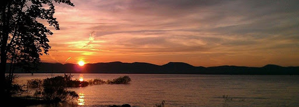

Hello! My name is Riley Pierson. I am a senior at Siena University studying Computer Science and Data Science with a minor in mathematics.
Computer Languages I Know
The following programming languages are languages I have learned either while attending Siena University or through my work experience thus far.
- Java
- Python
- Deluge
- Bubble.io (Low-Code Programming Language)
My Favorite Hobbies
The following list includes some of my many hobbies. While this list is not all-inclusive, it is a great start to get to know me!
- Cooking
- Hiking
- Crocheting
- Baking
Below is a picture of The Great Sacandaga Lake, that's where I live!

Visit my LinkedIn profile here!